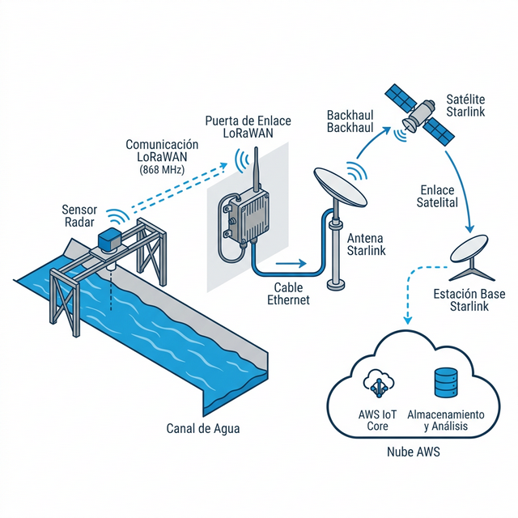

Modernización de Canales - Valle de Colchagua

El sistema utiliza telemetría radar de alta frecuencia para la medición de nivel sin contacto, transmitiendo vía LoRaWAN privada hacia la red Starlink del cliente para su centralización de datos en plataforma AWS.
Previo al despliegue en terreno, todos los equipos pasan por un proceso de configuración y validación en laboratorio para asegurar el correcto funcionamiento de la red.
Inversión Fase 0: 8.0 UF (Fijo)
Basado en Ecosistema Milesight. Orientado a continuidad operacional crítica.
Diferenciadores Clave vs Estándar
| Configuración | NFC (Sin abrir equipo) |
| Protección | IP67 Industrial Sólido |
| Ecosistema | Gestión Unificada Hub |
Punto adicional: 18.5 UF (Incluye Equipo)
Basado en componentes Dragino. Equilibrio costo-rendimiento para validaciones.
Punto adicional: 9.5 UF (Incluye Equipo)
Marcha Blanca
Inscripción técnica y pruebas de laboratorio de los nodos.
Red Core
Instalación de Gateways sobre Starlink del cliente.
Despliegue
Montaje de sensores y calibración de curvas de aforo.
Entrega y QA
Validación de datos en AWS y entrega de Dashboard final.